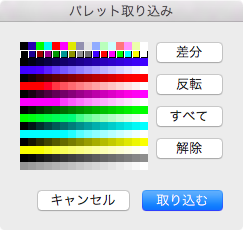

Paste from PasteBord
The PoCo.app allow to paste from the pasteboard when there is data with the NSPNGPboardType on the pasteboard.
In addition, the PoCo.app also obtain chunks that are private chunks.
The PoCo.app supporting for the type of chunk are following:
| CHUNK | Name | Description |
|---|---|---|
| IHDR | Image Header | The color type must be specified 3(indexed color), and non-interlace must be specified. Image size(width and height) obtain from this chunk. |
| PLTE | Palette | Stored values are obtained from first to last one by one. When there are less than 256 colors, obtaining is so far.(colors of absent are default color within the PoCo.app.) |
| tRNS | Transparency | Stored values are obtained for which each color have the tranparency of the auxiliary attributes of a color. A value interprets 0 as transparency, a value interprets 255 as opaqueness. Intermediate values are interpreted as opaqueness except that that values are stored to R, G, and B if a corresponding color is non-colored.(that is, tRNS chunk interpretation when grayscale treat as transparent on the preferences panel is specified.) If the number of element is less than 256, obtaining is so far.(by default, that colors are opaqueness.) |
| drOP | Not use Private chunk |
Stored values are obtained for which each color have the not-use(exclude color) of the auxiliary attributes of a color. |
| maSK | Mask Private chunk |
Stored values are obtained for which each color have the mask(prohibit overriding) of the auxiliary attributes of a color. |
| IDAT | Image Data | This chunk is used as the pasted image. |
| IEND | Image Trailer | The end of the PNG data-stream within the pasteboard. The PoCo.app does not read beyond datas. |
Import Palette
As mentioned to copy to the pasteboard, the auxiliary attributes of a color are also pasted when the data of pasteboard is stored(copied) by the PoCo.app themself.
Hence, when pasting, that private chunks are imported.

A part of list appear like float that are the meaning of "target"
When palette is imported, the element of a color and the auxiliary attributes of a color are overrided by imported palette contain data.
- Differ
If there is difference between the current image(document) and the pasteboard, corresponding color(s) are selected - Invert
The selection state of all the colors are inverted. - All
All the colors are selected. - Clear
All the colors are non-selected.